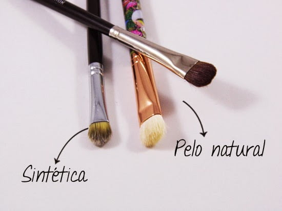

En primer lugar, encontrarás brochas con dos tipos de pelo: natural y sintético. Ambos tipos de pelo son necesarios para aplicar diferentes tipos de maquillaje. Así, en términos generales, los fluidos se aplican con brochas de pelo sintético porque son más resistentes y los manejan mejor, mientras que los productos en polvo se aplican con pinceles de pelo natural.Además, encontrarás kits de brochas y pinceles de maquillaje económicos compuestos solo por brochas de pelo sintético cuya tecnología llega a imitar con gran acierto la calidad del pelo natural. Aún así, lo lógico es que un kit de brochas completo contenga tanto pinceles de pelo sintético como de pelo natural.
